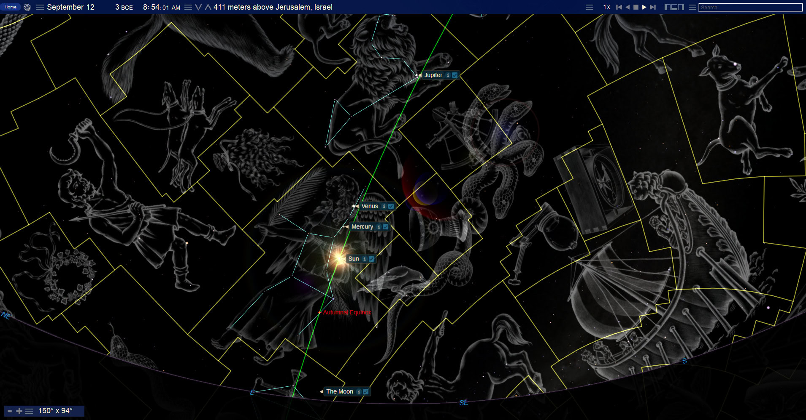
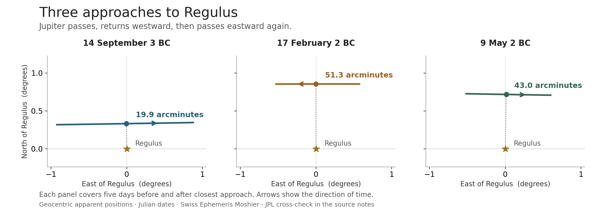
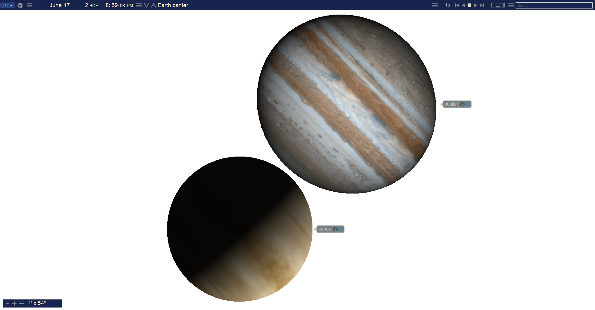
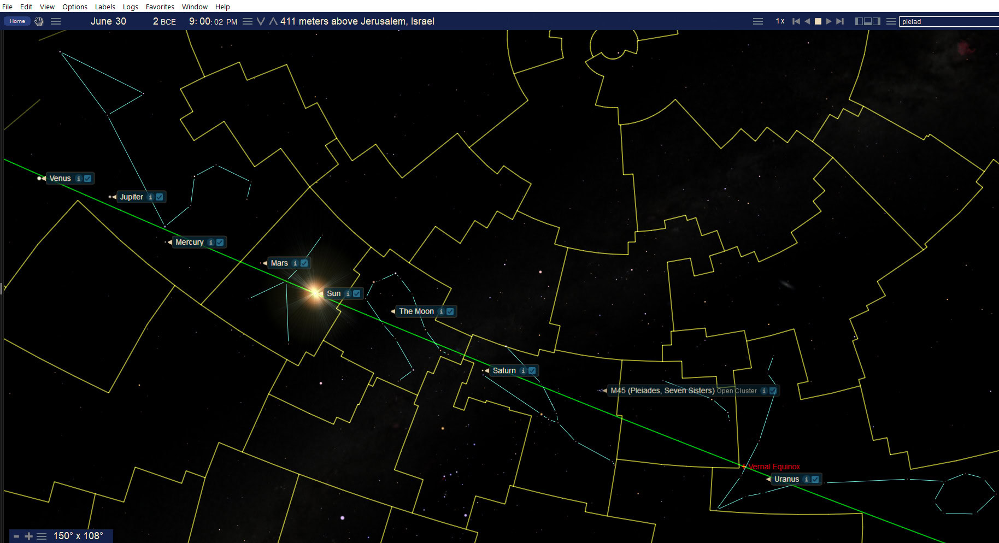

The Woman the Child and the King
Book 2 · Celestial Signs of the First Advent · Chapter 2
Book 2 · 19 October 2026
“And she gave birth to a son, a male child, who will rule all the nations with an iron scepter.”
Revelation 12:5a, BSB
John places the birth of the Child within a conflict that reaches from earth to heaven. The woman gives birth, the dragon seeks to destroy, and the Child is destined to rule. That is the setting in which I examine the woman and the royal imagery in the sky. The question is whether the arrangements around Christ’s coming bear a recognizable witness to the same story.[1]
Chapter 1 introduced the sequence. Here I follow its parts more closely: the September 3 BC scene in Virgo, Jupiter’s three approaches to Regulus, the close meeting of Venus and Jupiter in June 2 BC, and the gathering of the seven wandering lights later that month. The dates and positions can be checked. Reading them together as a witness to Christ is the interpretation I am proposing.
The chronological distinction made in Chapter 1 continues to apply. The Repository retains 6 BC as its historical birth anchor. These later scenes belong within the wider Incarnation pattern examined there; they do not move Christ’s birth to 3 or 2 BC. All dates below are Julian unless another calendar is named.[2]
The woman in the vision
The Sun, Moon, and stars already carry a family meaning in Genesis. In Joseph’s dream, the heavenly lights bow before him, and Jacob understands the dream in relation to his own household. The picture concerns the family from which Israel’s tribes arise. That gives us a biblical starting point for John’s woman and her crown, before we open a planetarium program.[3]
I read the woman against that history of Israel, with Mary personally bearing the promised Son. John’s vision also reaches beyond the birth: the woman has other offspring who hold to Jesus’ testimony. Its scope is larger than a portrait of one mother at one moment. Israel’s history, Mary’s motherhood, and the continuing life of God’s people meet in the imagery. That is how I approach the passage; the sky comparison develops within that reading.
This helps explain why a celestial picture may correspond to part of the vision without containing everything John saw. A constellation outline cannot show the whole history of a people. Nor can the position of a planet establish the identity of the Child. Scripture supplies that identity. The royal rule in Revelation 12 recalls the Son and the nations in Psalm 2.[1][4]
The dragon’s hostility also prevents the birth scene from becoming sentimental. The Child enters a world already contested. His coming concerns powers that human beings do not ordinarily see. John allows us to look at the conflict from above, where the apparent vulnerability of the Child does not determine the outcome.
Virgo and the Moon beneath her feet
In the supplied September 11–12, 3 BC scenes, the Sun lies in Virgo, while the young Moon occupies the region beneath the feet of the traditional figure. Jupiter lies farther along the sky in Leo. The arrangement puts the woman and the royal region in the same view.


Two features of this image need to be understood together. The stars and planets have calculated positions. The woman drawn among them is an illustration belonging to a constellation tradition. Her feet are part of that figure, whereas the angular yellow boundaries on the chart mark modern astronomical regions. Saying that the Moon is beneath her feet describes its position relative to the figure; it does not require the Moon to lie inside the modern boundary of Virgo.
The Sun’s presence also matters. This is a daytime arrangement displayed with the sky background darkened so that the relationships can be seen. It is not a claim that someone in Jerusalem saw the pictured stars around the Sun that morning. The young waxing crescent belongs to the evening sky for ordinary observation. Its appearance in this reconstruction records geometry, not a recovered sighting report.[5]
I regard that distinction as necessary and entirely compatible with a heavenly sign. The positions existed whether people could see them together or not. If the purpose of a sign includes a heavenly audience, daylight does not cancel it. Human visibility answers a historical question about observers on earth. It does not exhaust the question of whom God may be addressing.
The crown of twelve stars requires similar care. John gives the number twelve, and the biblical setting gives it meaning. This chapter does not establish a uniquely defined group of twelve visible points above Virgo. A different drawing or selection of stars can change a count. I therefore retain the crown in the interpretation of the vision without presenting an arbitrary selection on the chart as its measured fulfillment.
What the image contributes is more specific: a woman associated with the Sun, the Moon beneath her feet, and nearby royal imagery. I see a correspondence worth following through time. The next part of the sequence gives that royal imagery movement.
Jupiter returns to Regulus
Regulus is a bright star in Leo, close to the ecliptic, the apparent annual path of the Sun. Its familiar name means “little king.” I use Jupiter as a royal figure in this reading. Its repeated approaches to Regulus bring the planetary king beside the named royal star within the Lion.[6]
The biblical connection begins with Judah. Genesis 49 joins the lion, the scepter, and the allegiance of the nations in Jacob’s blessing. Revelation 5 names the victorious Lion of Judah and then shows John the Lamb who has been slain. These passages give the Lion its Christological meaning here. A constellation’s name alone would not establish that connection.[7]
Jupiter approaches Regulus three times between September 3 BC and May 2 BC. This happens because the moving earth changes our line of sight to Jupiter. Against the more distant stars, Jupiter first advances, then appears to reverse direction, and then resumes its forward motion. The reversal is called retrograde motion. Jupiter continues along its orbit throughout; the reversal belongs to its apparent path in our sky.
The three approaches can be stated simply.
| Closest approach in the working calculation | Apparent direction near the encounter | Approximate separation |
|---|---|---|
| September 14, 3 BC | Eastward | 20 arcminutes |
| February 17, 2 BC | Westward | 51 arcminutes |
| May 9, 2 BC | Eastward | 43 arcminutes |
There are sixty arcminutes in a degree, so all three encounters fall within one degree. These are closest angular approaches, not necessarily the instants at which the two objects share exactly the same ecliptic longitude. The calculation records preserve that distinction, together with the time scale and software used.[8]


The diagram shows the change of direction that a single sky plate cannot convey. Jupiter passes the star, returns past it, and approaches again. This gives the royal association a repeated action over several months. The first approach follows closely after the September Virgo scene; the third precedes the June conjunction.
I read this as an emphasis on kingship. The repeated encounters make the association more sustained than a single passing alignment. They do not, by themselves, identify a coronation date or supply a missing event in the Gospel narrative. Nor am I claiming that Jupiter traces a literal crown. The proposed meaning rests on the repeated royal association and its place in the larger sequence.
The Lion’s identity must also remain connected to the Lamb. John’s royal imagery leads to the One who conquers through His sacrifice. Book 1 followed that sacrifice. Returning to the birth era does not remove the Cross from the meaning of His kingship.
The close meeting of Venus and Jupiter
On June 17, 2 BC, Venus and Jupiter come very close together in Leo. This is the encounter shown in the enlarged original plate below. The picture places their disks beside one another, making a relationship visible that would be lost in a wide view of the constellations.


The numerical check matters here because the encounter is close enough for small differences in the calculation to affect the description. The older working master gave a minimum separation of about 1.245 arcminutes. Fresh Swiss Ephemeris and JPL calculations instead give approximately 26–27 arcseconds from Earth’s center, a little under half an arcminute. The older figure is not retained as the measured minimum in this chapter.[9]
Earth’s center is a useful common reference, but it is not where an observer stands. From Jerusalem the calculated separation is wider, approximately 35 arcseconds under the stated models. Venus is much nearer to us than Jupiter, so changing the observing position shifts Venus more against the background. That difference is parallax.
These results support a very close conjunction. They do not, on their own, establish that an observer in Jerusalem saw one planetary disk cover the other. A physical overlap requires a calculation of the apparent edges as well as their positions. The available ancient JPL calculation uses the center of mass of Jupiter and its moons, rather than a separate solution for the center of Jupiter’s visible body. That limitation is recorded with the measurements.[9]
The supplied illustration remains useful when read for what it is: a greatly enlarged software view from Earth’s center. Its clock and rendering are preserved, but neither is substituted for the fresh calculation. The chapter’s interpretation does not depend on forcing the disks to overlap.
Venus adds another association. Jesus calls Himself the bright Morning Star in Revelation 22. On this June date, however, Venus is an evening object. The same planet can appear before sunrise or after sunset at different stages of its cycle. I use the Morning Star title as a scriptural association with Christ, not as a claim that this particular encounter happened at dawn.[10]
The royal figure and the bright planetary light meet in the Lion after Jupiter’s repeated approaches to Regulus. I read the conjunction as a further concentration of the same royal witness. I do not assign Venus to Mary and Jupiter to Jesus as though every body required a separate human counterpart. Scripture itself permits more than one image to speak of Christ: the Lion and the Lamb already demonstrate that.
The seven wandering lights
Thirteen calendar days later, on June 30, 2 BC, the scene widens. The Sun, Moon, Mercury, Venus, Mars, Jupiter, and Saturn occupy an arc running from Taurus through Gemini and Cancer into Leo. These are the seven classical wandering lights: the Sun and Moon together with the five planets known without telescopes. “Seven” here names that traditional group, not seven planets in modern astronomical usage.
The following original view removes the constellation artwork and leaves the boundaries and connecting lines visible. It helps separate the positions of the bodies from the figures drawn around them.


Under modern constellation boundaries, Saturn is in Taurus and the Moon is in Gemini. The Sun and Mars are in Cancer. Mercury, Jupiter, and Venus are in Leo. The Lion’s artwork in some of the other plates extends into the area occupied by the Sun and Mars; that does not move those bodies into Leo.[11]
At the dated instant checked from the supplied June 30 overview, the seven occupy about 81.5 degrees of ecliptic longitude, from Saturn to Venus. This is an angular spread along the ecliptic, not the chart’s rectangular field of view. The Pleiades appear farther along the sky in the boundary view, and Uranus is also labeled, but neither belongs in this seven-body measurement. Adding either would change the group being measured.
The image displays objects that could not all have been seen simultaneously in a dark sky. The Sun belongs to the group. A software view can show the arrangement while suppressing daylight and the horizon; a human observer cannot do so. This again concerns the extent of earthly observation, not the existence of the arrangement.
I call it a procession because the familiar wandering lights are gathered in an ordered succession across one part of the heavens. That word states my reading of the scene. It does not mean that the bodies lie on a perfectly straight line, stand at equal intervals, or move together as a physical group. Their different orbits bring them into this apparent arrangement as seen from earth.
The sequence has now moved from the woman and the Moon to repeated royal encounters, then to the close conjunction and the wider gathering. The procession gives the reading a corporate dimension: the principal lights by which people have watched the heavens take their places around the same period. I understand this as a fitting witness to the King whose coming concerns the whole creation.
The witness and the date of the birth
The events are connected in this chapter by their imagery and sequence. That connection must not make their dates exchangeable. The September scene, the three approaches to Regulus, and the June conjunction remain distinct events. They are not several descriptions of one night.
The Repository’s historical birth anchor is earlier. A scene in 2 BC therefore cannot be called the night of Christ’s birth while 6 BC remains the historical anchor. Within the wider Incarnation pattern, the later scenes may bear witness to the Child already born and the kingship belonging to Him. That is the relationship proposed here.[2]
Matthew’s account of the Magi is a further question. Their recognition of a star, their visit to Herod, and their arrival at the place where the Child was must be considered together. This chapter does not date their journey from the June conjunction or claim that ordinary planetary motion explains the star’s guidance to a particular house. The heavenly sequence can be examined without attaching it prematurely to that itinerary.
John’s vision gives a reason to consider a wider span. It joins the birth with the Child’s reception at God’s throne. I understand that compression as a view of His coming and victory from heaven, where the significance of the events can be seen together. It does not authorize us to compress their earthly dates into one astronomical configuration.
Reading the royal imagery from heaven
The sky has been described through many nations’ names and stories. I do not think their misuse of the heavens deprived God of the ability to speak through His creation. The Repository makes this point in its discussion of the “Star Script”: the theological reading concerns God’s sovereignty over the stars and the stories associated with them. That is a framework for interpretation, not a substitute for checking an astronomical claim.[12]
When I use the royal associations of Jupiter and Regulus, I am reading them in relation to the God of Israel and His Messiah. The nations’ vocabulary can serve as a foil. Kingship belongs finally to Christ, whatever claims have been attached to the lights that God made. The planets do not cause His birth, confer His authority, or govern His destiny.
That perspective also changes the audience we imagine. We naturally ask whether the Magi saw an arrangement, whether it was visible from Jerusalem, or whether someone left a record. Those are legitimate historical questions. Yet the Son’s coming concerns heaven before it becomes news on earth. His rule does not begin to matter only when a human observer understands a chart.
I am proposing that this sequence bears witness within that larger reality. The woman, the royal encounters, and the gathered lights direct attention toward the Child and His kingship. I cannot recover the response of the heavenly host to each event. I can take seriously Scripture’s presentation of a creation whose inhabitants include far more than ourselves.
The next chapter follows the Moon into the 1 BC material and the received birth and naming framework. The movement is from these planetary scenes to a closer examination of the lunar signs and the calendar relationships around the manger. The same question continues: what does the coming of Christ look like when earth is viewed from heaven?
Sources and calculation notes
1. Revelation 12, especially verses 1–6 and 17. The opening quotation is the first sentence of verse 5. The interpretation of the woman and the scope of the vision is the author’s reading.
2. File 13 — Christological Matrix, working state register and §2. The 6 BC historical anchor, the 6n BC to AD 2n Incarnation week, and the December 25, 1 BC / January 1, AD 1 received framework remain distinct. The planetary sequence is not a new historical birth-date determination.
3. Genesis 37:9–11. The family interpretation belongs to the biblical dream; it does not establish an astronomical date for Revelation 12.
4. Psalm 2, especially verses 7–9, supplies the Son, nations, and iron-scepter setting.
5. Supplied image archive, IMG0374, compared with IMG0407 and raw Section 3. The displayed September 11 panel’s JD 1,720,580.72708 corresponds to 05:27 UT and approximately 07:48 Jerusalem local mean solar time, not 08:27 LMT. That conversion belongs to the September 11 panel; it is not imposed on the different September 12 illustration reproduced here.
6. Regulus is Alpha Leonis. The IAU Catalog of Star Names records the royal meaning of the name. Jupiter’s royal role in this chapter is an interpretive convention; the chapter does not reconstruct what a particular ancient observer concluded.
7. Genesis 49:8–10 and Revelation 5:5–10. The lion and scepter association is read through these passages; Leo is not explicitly named in them.
8. Fresh calculation of minimum angular separation using Swiss Ephemeris 2.10.03, Moshier planetary positions, and the official Regulus star record with proper motion: 19.90, 51.35, and 43.04 arcminutes. The diagram rounds these to one decimal place; the table uses whole arcminutes. A bounded JPL DE441 check of Jupiter’s position, combined with the same stellar calculation, agrees at the precision used in the table. The third minimum falls on May 9 under the stated Julian UT convention. This replaces the raw May 8 label for that convention.
9. At the June 17 encounter, Swiss gives 26.07 arcseconds geocentrically and 34.57 arcseconds from Jerusalem. JPL DE441 samples at one-minute intervals in Terrestrial Time give 26.55 and 35.08 arcseconds respectively. Both use Jupiter’s system barycenter. The JPL body-center request is unavailable for this ancient date. These are modeled apparent separations; disk contact is not certified. The package preserves requests, responses, calculations, and the Jerusalem location, 31.778° N, 35.235° E, elevation 754 m. See the JPL Horizons manual and Swiss Ephemeris documentation.
10. Revelation 22:16. The title is a scriptural association. The June 17 conjunction is on the evening side of the Sun.
11. The width check uses JD(UT) 1,720,873.02126, the instant printed in supplied overview IMG0409: 81.50 degrees between Saturn and Venus in geocentric apparent ecliptic longitude. Figure 2.4 is another supplied view from the same date, IMG0335; its screen clock is not treated as the same instant. Boundary assignments were checked from Swiss positions using a modern constellation-boundary lookup. No equal-spacing condition is asserted.
12. File 21 — SKL Unified Protocol, Part VI, Axiom 21.1. This section provides theological meaning-context and does not certify the chapter’s ephemerides.
Scripture quotation: Berean Standard Bible (BSB), public domain.
← Previous: Chapter 1 — The Birth of Christ and the Witness of Heaven
Book 2 contents
Next: Chapter 3 — The Moon and the Manger →